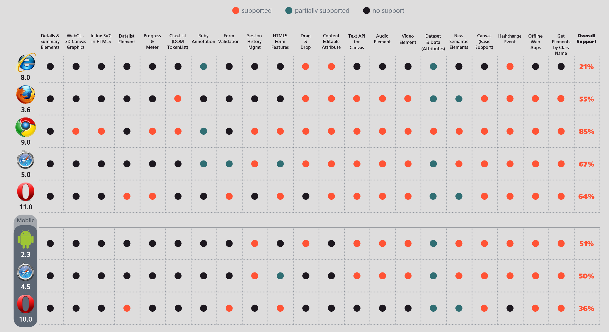

HTML5.
Pablo Castro Valiño
Marcos Chavarría Teijeiro
Perspectiva Histórica
WWW
No ano 1989, Tim Berners-Lee publica unha proposta para un sistema de hipertexto para compartir documentos.
HTML
Linguaxe de Marcado de hipertexto que se creou para WWW.
No ano 1995 crease o primeiro estandar (HTML 2.0).
W3C
Organismo que publica os estandares de HTML.
W3C
En 1997 publicase HTML 3.2
Java Applets e texto arredor das imáxenes.
W3C
No ano 1998 publicase o estandar HTML 4.0 e no ano seguinte HTML 4.1.
Inclue follas de estilo e a posiblidade de incorporar Scripts no documento HTML.
XHTML
O W3C abandona o desarrollo dos estandares HTML para centrarse en XHTML
WHATWG
(Creado no ano 2004)


HTML5
W3C retoma a elaboración de estandares HTML en marzo do ano 2007
O primeiro borrador de HTML5 publicase en xaneiro do 2008
Novas Características¹
 Semantica
Semantica
Engade novas etiquetas semanticas. (<section>, <article>, <aside>,...)
 Estilos
Estilos
Mellora notablemente as posibilidades das follas de estilo (CSS).
Multimedia
Soporte de elementos multimedia de forma nativa. (<audio> e <video>)
Proximamente: Audio Data API,Timed Track API
 Graficos
Graficos
SVG, canvas 2D, transformacions 3D CSS, WebGL, etc.
Almacenamento Offline
Caches de aplicacions, almacenamento local (localStorage), etc.
Web SQL -> IndexedDB
Sistema de Ficheiros
Interación co sistema de ficheiros do SO a traves da FileSystem API de HTML5.
Drag and Drop
Conectividade
WebSockets: Conexión bidireccional entre cliente e servidor.
Server_Sent Events: Eventos emitidos polo servidor e recibidos polo cliente/navegador.
Rendemento
Mellorar a experiencia de usuario.
Mellorar resultados finais
Mellorar resultados finais
HTML5
vs.
Aplicacións Nativas
Portabilidade


Fragmentación!
Portabilidade

Write Once Run Anywhere
Portabilidade
Descarga incremental
Non é necesario descargar o aplicativo completo.
Facilidade do desarrollo
Maior número de desarrolladores
Sinxeleza para crear as vistas da aplicación
Actualizacións automáticas e inmediatas
Falta de Marketplace
Apple Store
400 millóns de usuarios
650.000 aplicativos
Play Store
850.000 aplicativos
É necesario?
Seguridade
Seguridade por ocultación
Proteción dos datos persoais
Experiencia de usuario
Falta de DRM

Falta de funcionalidades
(por agora)
Resumo
- ✔Portabilidade.
- ✔Descargas incrementales.
- ✔Facilidade no desarrollo.
- ✔Actualizaciones automaticas.
- ?Falta/Necesidade de Marketplace.
- ✗Seguridade.
- ✗Experiencia de usuario.
- ✗Falta de DRM.
- ✗Falta de Funcionalidades.